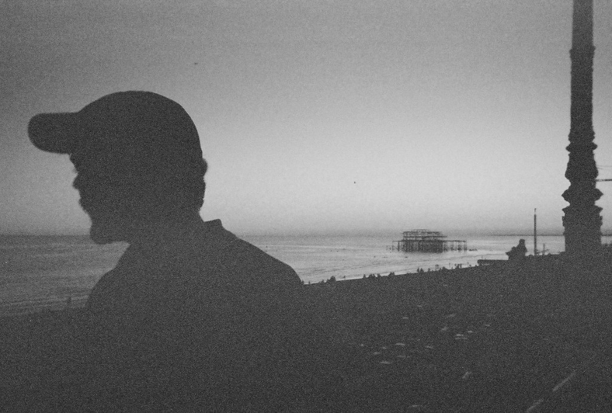

about

My name is Kevin and I am interested in the intersection between electronic arts, communication, and natural history.
I am currently pursuing a Master of Education in Instructional Design & Educational Technology at the University of Utah, and work in the Exhibits department at the Natural History Museum of Utah in Salt Lake City.
I graduated from SUNY Adirondack with an AAS in Media Arts in 2014 and from Purchase College with a BA in New Media in 2017.